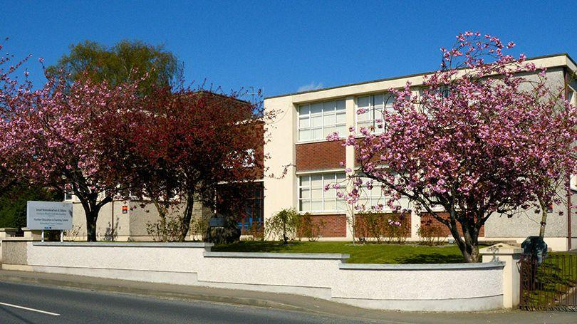

| This project was assigned as part of my course work at LCETB - Kilmallock - pictured to the right. |
 |
I was asked to meet the criteria of my lecturers brief
as outlined in the sections below: I will also outline my design in brief below. | |
I was asked to meet the criteria of my lecturers brief
as outlined in the sections below: I will also outline my design in brief below. | |
| This project was assigned as part of my course work at LCETB - Kilmallock - pictured to the right. I was asked to meet the criteria of my lecturers brief as outlined in the sections below: I will also outline my design in brief below. |
Guidelines
Assignment - Produce a page for publication on the World Wide Web using an appropriate software package or HTML tags. The content of the page should detail:
- Home Page / About Us
- Development of the Internet (Summarise the development of the internet, its growth and current trends in its development)
- Use of the Internet for a range of purposes including communication, research, collaboration and e-Commerce. (Investigate the use of the internet for a range of purposes to include voice and written communication, information search, file downloading, file sharing and e-Commerce)
- Appropriate enterprise software used to meet a range of business requirements. (Identify appropriate enterprise software to meet a range of business requirements to include Customer Relationship Management (CRM) Systems, Payments Systems and Supply Chain Management (SCM) Systems)
- Use of different web authoring applications to create web pages and manage content. (Explore the use of web authoring applications to create web pages and manage content to include word processors, desktop publishing programs, website management systems, webpage builders and HTML editors)
- Bibliography
Learners must adhere to accepted heuristic guidelines in relation to the linguistic, technical and graphical elements of web page design.
Instructions
- Create a folder called YourNameInternetDevelopment on your One Drive
- Create at least 6 linked pages with a common design and colour scheme
- Divide each page into sections as you find appropriate
- Use a table to display the history of the Internet
- Insure proper use of HTML tags across website including Doctype, Head, Title, links, images, tables & lists
- Insure all internal & external links work
- Print code with line number and 25mm gutter, all web pages and include bibliography as a PDF
- Print a copy of the text in Word
My Design
My design would start on a black body. This would only be visible on the margins to a small degree.
I prefer my content to be accessible with slightly larger than normal font sizes. I also like my pages to have a Capital I shape as I find this format to be less cluttered.
I structured my pages to have curved corners. Starting with my header where I used my own h3 header.
Below this I positioned my navigation bar.
Then my main content section featured and styled to each page's needs, whilst trying to keep a familiarity between pages.
I started each main with my own h7 styled title from the page and thereafter used mainly sections or a table for input data.
My footer enjoyed some artistic license, with a background set to portray some of the drawbacks of the internet - rage and ugliness.
I would use a table with my 'Produced by ConorC' text & Blue icon drawing I created. This table was set with a transparent background so the image beneath could shine. I used a new colour scheme for this text white with black shadow.
Overall i would use black, blues, aqua, aliceblue & a pale yellow as my colour scheme to display my pages.
I used a style sheet as the basis for my CSS, imported from a previous page and I adapted CSS for individual pages. I used unordered lists in several places to break up larger sections of text. Four images, 2 ARPAnet maps & 2 screenshots of Dreamweaver had links added to them – so that they could be viewed in a new tab at greater scale for clarity.
I was reasonably happy with my efforts, though the internet and its complexity can be very overwhelming as a topic for discussion.